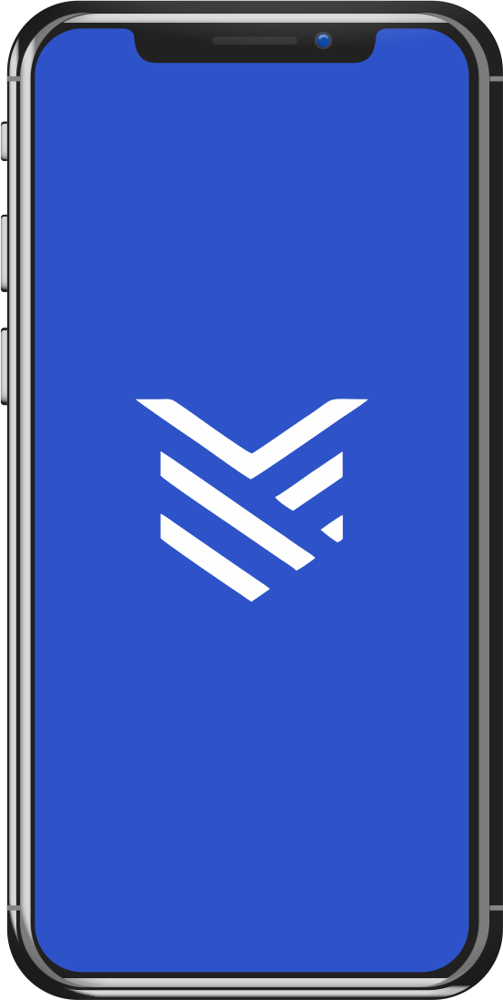

How To Stake Your Cardano ADA
There are many ways
to delegate/stake your ADA, you can choose either Daedalus or Yoroi as your
private wallet.
Daedalus
- Download the Daedalus Wallet.
- First time launching the Daedalus wallet, the wallet will sync with the blockchain.
- After synchronization is complete, follow instruction to create / restore a wallet.
- Make sure the wallet has been funded by your ADA, or you can fund your wallet by creating an address in the "Receive" tab.
- Click the "Stake Pools" tab in the left panel.
- Search "YORK" and click "Delegate to this pool" button.
Yoroi
- Download the Yoroi Light Wallet.
- Find and click the "download" button then choose your preferred browser. (Yoroi wallet will be installed as extension/add-on on your browser)
- Launch the Yoroi wallet extension within the browser.
- Follow instruction to connect / create / restore your Cardano wallet.
- Make sure the wallet has been funded by your ADA, or you can fund your wallet by creating an address in the "Receive" tab.
- Click the "Delegation List" tab and search "YORK" in the Search By Id or Name form.
- The Result will be that pool and click the "Delegate" button.

Yoroi Mobile
- Search and download the Yoroi mobile wallet app from your device: iOS | Android
- Launch the Yoroi app and follow instruction to connect / create / restore your Cardano wallet.
- Make sure the wallet has funded by your ADA, or you can fund your wallet by creating an address in the "Receive" tab.
- Go to the "Dashboard" tab and choose "Go to Staking Center".
- Search "YORK" and then choose the "Delegate" button.